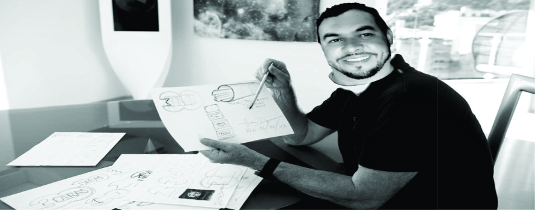
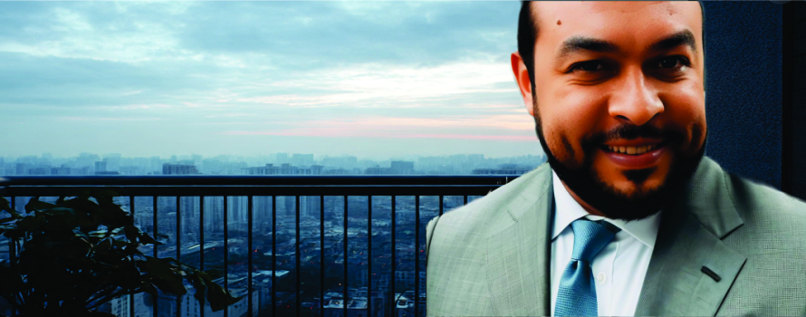

História do Mascote do Android
Essa primeira versão bizarra até foi batizada em homenagem ao seu criador: seriam os Dandroids.
Surge um novo mascote
A ideia de ter um mascote foi amadurecendo e a missão foi passada para uma profissional da área. A ilustradora Russa Irina Blok, também funcionária do Google, ficou com a missão de representar o pequeno robô de uma maneira mais agradável.
A ideia principal da Irina era representar tudo graficamente com poucos traços e de forma mais chapada. O desenho também deveria gerar identificação rápida com quem o olha. Surgiu então o Bugdroid, o novo mascote do Android.

A principal inspiração para os traços do novo Bugdroid veio daqueles bonequinhos que ilustram portas de banheiro para indicar o gênero de cada porta. Conta a lenda que a artista estava criando em sua mesa no escritório do Google e olhou para o lado dos banheiros e a identificação foi imediata: simples, limpo, objetivo.